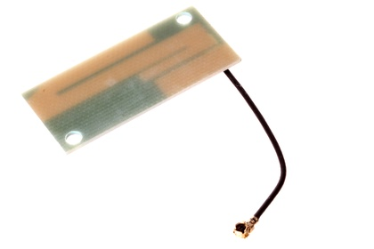

18 mm Quad Band (850/900/1800/1900 Mhz) Antenna - AN4X18

Summary
Name:
18 mm Quad Band (850/900/1800/1900 Mhz) Antenna
ID:
ANTE-18-X-M4X4-01
Hex ID:
AN4X18
WebPage:
https://github.com/oomlout/oomlout-OOMP/wiki/ANTE-18-X-M4X4-01
Short URL:
http://oom.lt/AN4X18
Revision History:
https://github.com/oomlout/oomlout-OOMP/blob/master/parts/ANTE-18-X-M4X4-01/
Type
Size
Color
Description
Index
ANTE
Antenna
18
18 mm
X
M4X4
Quad Band (850/900/1800/1900 Mhz)
01
Images
About
This part is awaiting a description.
Specifications
Info
Value
Type
Antenna
Size
18 mm
Description
Quad Band (850/900/1800/1900 Mhz)
Extra Details
Spotted a mistake, want to add more? Let us know
oomp@oomlout.com
All images and resources are licensed [CC BY-SA] unless otherwise stated (ie. the datasheets)